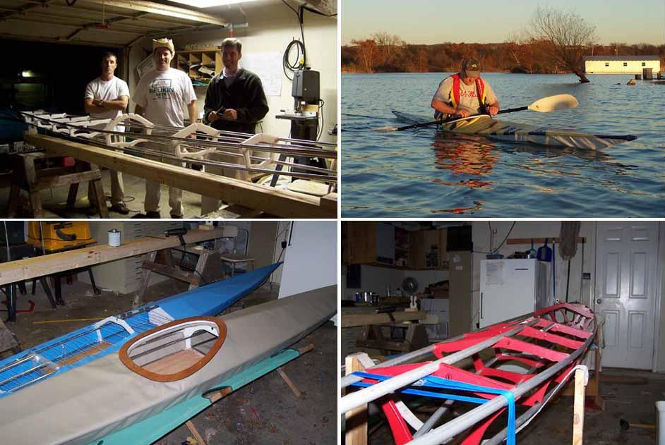

| Sea Ranger by John Forney | Menu Last Page Next Page |
|
 John Forney and friends from Ft. Worth, Texas are building 2 Sea Rangers and 2 Sea Cruisers. John's Sea Ranger frame (Top Left) can be seen in the shop, being tested with a temporary skin (Top Right) , and nearing completion with a tan Coverlight PVC skin (Bottom Left) . Peter's blue Sea Ranger ( Bottom Left) is also nearing completion. Bennett's Sea Cruiser frame (Bottom Right) in the shop with red ( non-HDPE) plastic cross sections. |
|